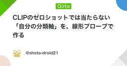

DeepLearningタグが付けられた新着記事 - Qiita
https://qiita.com/tags/deeplearning
DeepLearningに関する情報が集まっています。現在8228件の記事があります。また5184人のユーザーがDeepLearningタグをフォローしています。
フィード

【2026年最新】金属表面欠陥分類CNNの選び方と実装 〜VGGからSwin Transformerへ〜
DeepLearningタグが付けられた新着記事 - Qiita
この記事とリポジトリの実装・整備には、Anthropic の Claude Code の力を借りて作成しました。はじめに銅の展伸材などの金属表面外観検査でVGG16/19を使っていましたが、以下の課題がありました。GradCAMがうまく機能せず「なぜその結果か...
5日前

AI実装検定S級、参考書がなくて不安だった話
DeepLearningタグが付けられた新着記事 - Qiita
はじめにAI実装検定 の S級 を受けるとき、「参考書がない」ことが一番不安でした。公式サイトはこちらです。想定読者AI実装検定 S級を受けようとしている人専用の参考書がなくて、何から手を付ければいいか分からない人参考書がなくて不安だったA級に...
7日前
論文まとめ：Scaling up Test-Time Compute with Latent Reasoning: A Recurrent Depth Approach
DeepLearningタグが付けられた新着記事 - Qiita
はじめにgpt-6の発表に伴い話題となっている Reccurent Depth の関連論文を読んでまとめた。具体的には、NeurIPS 2025から以下の論文のまとめ[1] J. Geiping, et. al. "Scaling up Test-Time Comp...
7日前

CLIPのゼロショットでは当たらない「自分の分類軸」を、線形プローブで作る
DeepLearningタグが付けられた新着記事 - Qiita
画像分類をやろうとして CLIP のゼロショットを試し、「思ったより当たらないな」で止まった人向けの話です。手元の作業は自分で作ったツールで回していますが、この記事に載せるコードは PyTorch と OpenAI CLIP、Pillow だけで動きます。結論から書きま...
8日前